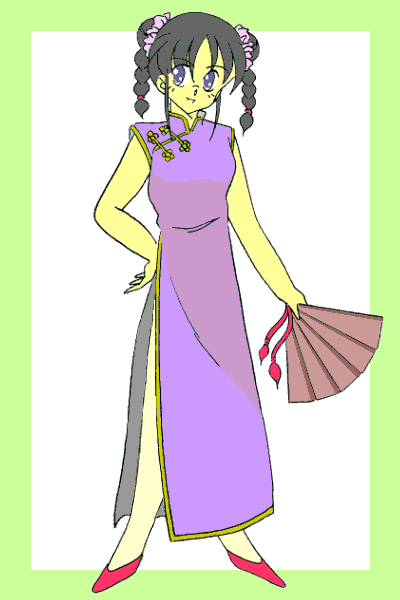

「ペルの奴、今度はどんなパワーアップをやるつもりなのかな？」
ここは精霊界との「扉」近くにある神社、俺たちはペルに呼ばれて神社の境内に集まっていた。
俺の疑問に応えて礼戸が口を開く。
「やっぱこの前の合体技の改良版じゃないの？」
「俺は嫌だぞ！！ 使うたびにお前らが女になってそれが終わると今度は俺が女になるなんて騒ぎはもう二度とごめんだ！！」
「結構楽しんでたようだったけど？ 帰るときうちの店の商品からノースリーブとミニスカート選んで、『スカートは赤と紺、どっちが似合うかしら？』なんて言ってたし……」
「し、仕方ないだろ！！ あの時は着替えを持ってなかったし……とにかく俺はこれ以上、喋り方や考え方まで女の子になりたくはないっ！！」
礼戸のからかうような言葉に、俺は顔を真っ赤にして反撃した。
あの騒動では礼戸自身も、最初はともかく最後の方は 「元に戻れなかったら……」 と悩んでいたので、それ以上は突っ込んでこなかったが。
「……じゃあさ、例えば俺たち三人がジャンプして空中でスクラム組むと一人の超強力な戦士が誕生するとか？」
「俺たちはト○プル○ァイターかっ！？」
「それとも三代の身体にマー○ュリー回路を埋め込んで『真空○獄車』って……」
ゲシッ！！ 「俺はカイ○ーグじゃねえっ！！」
「皆さんそろいましたね。実はパワーアップの件ですが……」
殴り倒した礼戸が復活した頃、ようやく姿を表したペルは、俺たちにパワーアップのためのある提案をした。
変身美少女戦士ミラージュガール
第六話：発動！！脅威！驚愕！恐怖？のパワーアップ！！
作：ライターマン
俺の名前は三代武士（みしろ・たけし）。１３歳だけど、夏休みが明けて９月になると１４歳になる。
４月に私立津留木（つるぎ）学園に転校してきた中学二年生で、名前と一人称の「俺」という言葉でも分かるように、俺はれっきとした男である。
その俺にはちょっとした秘密がある。邪霊界からやってくる魔物と戦うため、正義の美少女戦士ミラージュガールに変身しているのである。
男なのに美少女戦士はおかしいって？ ところが俺の場合、変身すると体が女の子に変化してしまうのだ。
事の起こりは俺の家族がここ新間（しんま）市に引っ越してきた日、母さんが昔使っていた変身ブローチを見つけたことだった。
２０数年前に美少女戦士だったという母さんの話を半信半疑（……というよりほとんど全疑）で聞いていた俺だったが、その時突然ブローチの力が発動してしまったのだ。
俺の身体はみるみるうちに女の子に変化していき、俺は白き光の美少女戦士ミラージュホワイトに、「レジスト」されてしまった——
精霊界から来た妖精ペルティノことペルの話では、母さんたちが閉じた筈の邪霊界からの「扉」が再び開いて、魔物がこの世界に侵入できるようになったと言うのだ。
そしてその際、奴らが何らかの結界をこの世界と精霊界との間に張ったため、新たな変身ブローチとともにこの世界を訪れようとしたペルは、その結界のためにダメージを受けてしまった。
ペル自身は何とか無事だったものの、持ってきたブローチが砕けて使えなくなってしまったため、精霊界では記念品となっていた母さんたちのブローチの力を復活させた。しかしその力が微妙に変質したらしく、本来女の子にしか働かない筈のブローチの力が、俺に対して発動したらしい。
何にしても俺がミラージュホワイトにレジストされてしまった以上、俺は美少女戦士として戦わなければならなくなったのだ。
レジストをキャンセルする事も出来るんだけど、多大な犠牲（……）を伴うことになるので、俺は断っている。
そして驚くべき事に、俺以外の二人のミラージュガールも実は男だったのだ。
一人は俺のクラスメイトで、青き水の美少女戦士ミラージュブルーに変身する、古木祐一（ふるき・ゆういち）。
最初の頃はお互いの正体が分からず、それが判明したときは両方ともかなりの衝撃を受けたものだが、今では結構仲のいい友人として付き合っている。
もう一人は、赤き炎の美少女戦士ミラージュレッドに変身する、礼戸一明（れいと・かずあき）。
こいつの場合、趣味で時々女装する事があり、ミラージュガールへの変身も楽しんでいる節がある。最初に俺と古木がこいつと出会った頃も、こいつは女の子（それもそれなりの美少女）の姿で現われて一騒動を起こしたのだが……あまり思い出したくないのでここでは省略する。
古木と礼戸の場合、変身を解除すればすぐにもとの男に戻れるのだから、まだましな方だろう。
だけど俺だけは、変身を解除しても何故か１０時間は女の子の身体のままなのである。
そのため学校に行くときや外出するときは、変身解除後に着るための着替え（しかも女物……）をいつも持ち歩かないといけなくなってしまった。
男の俺が女の子の下着や服を持ち歩くのなんて恥ずかしかったし……もちろんそれに着替えなければならないときは、もっと恥ずかしい。
そして着替えた後は、しばらく女の子として過ごさなければならない。
母さんは女の子になった俺を「真奈美」と呼んで楽しんでるようだったが、俺としてはさっさと邪霊界との「扉」を閉じて、女の子にならずにすむようになりたいと願っている。
「なー三代、ブローチの改造ってまだ終わんねーのか？」
「まだみたいだぜ。なんせ砕けた精霊石の破片でブローチを強化する、なんて精霊界でも初めての試みらしいからな」
礼戸が質問に俺がそう答えると、奴は「ふうーっ」とため息をついた。
ここは新間市内にあるインターネットカフェ。
なぜ俺たちがここにいるかというと、ブローチの強化のために篭っているペルの代わりに魔獣や魔人の情報を収集するためである。
……冷房完備でフリードリンクサービスつき、ってのもポイント高かったけど。
「そんなので本当にパワーアップできるのか？」
「らしいぜ、ペルの話のだとな」
あのとき、集まった俺たちにペルが語った内容は次のとおりだった。
ペルがこの世界に来るときに持ってきた変身ブローチは、邪霊界が張った結界のために中心にある「コスモジュエル」ごと砕け散った。
このコスモジュエルというのは、精霊界からの力を受け止め、同時に自然のエネルギーを蓄積してミラージュガールの力の源になる宝石なのだそうだ。
力を制御する飾りの部分がないとコスモジュエルの力は発動できないが、ペルは砕けたコスモジュエルの破片を俺たちのブローチに取り付けて、そのパワーを増大させようとしてるのだ。
「この方法だと、ミラージュガールに変身させるための力を流用する事により武器を装備する事が出来、短時間ながらパワーを増大させることも出来ます」
そう説明するペルの言葉を聞いて、俺たちは頷いた。
俺たちはペルにしばらくブローチを預ける事になった。そうしないとあの「魔人」に対抗できないだろうから……
「……いつ頃までかかるのかな？」
椅子に座っている古木の呟きに俺が答える。
「さあな、予定では今朝までに出来上がる予定だったけど……」
神社で何度呼んでもペルは現われなかった。
恐らく仕上げの段階で手が離せないのだろう……と母さんが言ったので、昼過ぎにもう一度訪ねてみたのだが、やはりペルはいなかった。
いいかげん暑さに我慢が出来なくなった俺は、古木と礼戸を誘って情報収集の名目でインターネットカフェに避難(？)してきたのだが……
「まさか『大当たり』が出るとはなあ……」
そうつぶやきながら、礼戸は古木が操作するパソコンの画面に写る掲示板に視線を移した。
……そこには 「新間市のとある山の中腹に得体の知れない生物が出没する」 といった、複数の目撃談が書き込まれていた。
「ここがそうか……」
ふもとに着いた俺は、山を見上げながらそうつぶやいた。
俺たちはインターネットカフェを出て、掲示板の書き込みにあった現場の近くに来ている。
ペルのいる神社とはほぼ反対側の方向だったから、俺はここに来る前に母さんに電話をして、ペルの様子を見てくれるように頼んだ。
掲示板の書き込みでは、登山道を登って少ししたところで出没するとあったが……
その時、道の奥の方から悲鳴が聞こえてきた！！
俺が登山道を登り始めようとすると、背後から礼戸が叫んだ。
「待てっ……行くのか？ 俺たちは今、変身出来ないんだぞ」
俺は礼戸の方へ顔を向けると、フッと笑った。
「お前たちは行かなくていいよ。ここに残ってくれ」
俺がそう言うと、礼戸の奴はニヤリと笑った。
「バカ、誰が行かないって言った？ ったく、そのセリフ俺が言おうと思ったのに……」
礼戸の言葉に古木も微笑みながら頷いた。
俺たち三人は、登山道に向かって走り出した。
登り始めてしばらくした頃、俺たちの目の前に親子連れの姿が飛び込んできた。
その後ろから魔獣が姿を現したのを見た俺たちは、足元にあった棒状の木の枝を拾って、その間に割って入った。
「早く逃げて下さい！！」
俺たちが叫ぶと、親子連れは走り出し、登山道を駆け下りていった。
魔獣は追いかけようとしたけど、俺たちが牽制してその行く手を阻んだ。
「……ようし、もうそろそろいいだろう。俺たちも逃げるぞ」
しばらく魔獣の相手をして親子連れが逃げ切ったのを確認した俺は、二人に声をかけその場を離れようとした。
だが登山道を下りようとしたその時、別の魔獣が二匹現われて俺たちの目の前に立ち塞がった。
そして、先程の魔獣の背後にさらに二匹……
「くそっ！！ 仕方ない、こっちへ逃げよう」
礼戸が叫び、俺たちは登山道の横の斜面を滑り降り、茂みの中に飛び込んだ。
茂みの隙間から周りの様子を探っていた俺に、後ろから古木が声をかけた。
「どう、様子は？」
「ダメだな。さっきより数が増えてる。７匹はいるぞ」
俺たちは茂み伝いに身を隠しながら移動していたが、魔獣のほうも数が増えて俺たちは身動きが取れなくなった。
このままでは、俺たちが隠れているところを見つけ出されて一斉に襲い掛かられるのも時間の問題である。
「あの……三代君に礼戸君、僕が囮になって魔獣を引き付けるから、二人はここから逃げてペルのところへ……」
「無理だな……一人が飛び出して気を引いたとしても２、３匹が限度だ。状況は何も変わりはしない」
俺は古木に全部を言わせずに提案を却下した。その方法は俺も考えたのだ。
「それに俺はお前を犠牲にするような事はしたくない。お前を囮にするくらいなら、俺がチャイナドレス着て扇子をヒラヒラさせながら奴らの前に出た方がいい」
そう言うと古木の顔が少し赤くなった。こいつ、俺のチャイナドレス姿を想像しやがったな……
などという事をやってる間に、魔獣の一匹が俺たちのいる茂みに近づいてきた。
どうするべきか？ ダメ元で俺が囮になるか？ それとも三人一斉に飛び出して一点突破を試みるか？
するとその時、一羽の鳥が俺たちの真上を飛んでいるのに気がついた。
「あ、あれは？」
トンビか？ それとも鷹か？ だがそんなことはどうでもよかった。
問題はその鳥が俺たちに向かって脚で掴んでいた袋を落とした事だった。そして袋の中には……変身ブローチがあった！！
という事はあの鳥はペルだったのだ。ブローチの改造がついに終わったのだ。
俺たちはそれぞれのブローチを手にすると、変身のためのキーワードを唱えた。
「「「ミラージュマジック ・ ミラクルチャージ！！」」」
するとブローチが光り出し、続いて俺たちの衣服が光の粒子に変わっていく。
光の粒子はそれぞれの周りを回り出し、裸の状態の俺たちは光に包まれた。
光に包まれた俺の身体が徐々に変化していく。
髪がサラサラになって長くなり、腰のあたりまで伸びていく。
肌が白くなり、指や腕、それに足がスラリと細くなっていく。
腰の部分が大きくなり、逆にウエストの部分が細く括れていく。
そして胸の部分が少しずつ膨らみ、やがて二つの丸い塊になる。
身体の変化が終わると、俺を囲んでいた光の粒子が集まり始める。やがてそれらは光沢のある白い生地で出来た服とミニスカート、手袋、ブーツ、ヘアバンドになって俺の身体を包み、そしてブローチが胸の中心に固定された。
変身を終えた俺の姿は腰まで届く長い髪をなびかせた女の子になっていた。他の二人は髪の伸びはわずかだけど、髪型や顔つきを含めたその姿は完全に女の子になっていた。
変身した俺たちの周りを魔獣たちが取り囲んだ。
その数は８匹、さらに……
「おやおや、やけに騒がしいと思えばあなた達でしたか」
不気味な声と共にもう一匹の魔獣を引き連れて魔人が現われた。
「ちょうどいい。魔獣もかなりの数を召喚しましたし、私自身の魔力も回復しましたのでここで決着をつけてあげましょうか？……もっともこの状況ではあまり楽しめそうもありませんが」
余裕の魔人に向かって俺が叫ぶ
「なめるなよ……いくぞ、みんな！！」「「おうっ！！」」
「「「プラグイン！！」」」
俺たちがキーワードを唱えると、胸のブローチが光を発する。
やがて光はブローチから離れて、ミラージュレッドの右手に薙刀、ミラージュブルーの右手にバトン状の物体、そして俺の左腕には少し変わったデザインの篭手を形成した。
「えいっ！！」
レッドは前に飛び出し最も近くにいた魔獣に薙刀を振り下ろした！！ そしてさらに横に回転させもう一匹の魔獣の体をを薙ぐ！！
すると斬り付けられた箇所から炎が上がり、たちまち魔獣は炎に包まれた。
「やっ！！」
レッドを横から襲おうとした２体の魔獣に向けて、ブルーがバトンを振るう。
するとバトンの先に霧のようなものが集まり、水が鞭のように伸びると魔獣の体を打った。
ピシッピシッ！！
鞭で打たれた魔獣は、たちまち体が凍りついた。
魔獣たちは慌てて二人に対して距離を取ろうとするが、二人は上手く回り込み魔獣たちを挟み撃ちにした。
そしてブルーがバトンを前に突き出し、地面に対して垂直に立てる。
バトンの両端からは透明な氷のような物体が伸び、やがてそれは大きな弓を形成した。
ブルーは弓の弦を引き絞り、現われた矢を魔獣に向かって放った！！
「氷結・冷極破！！」
放たれた矢は魔獣たちがいる場所の中心で爆発四散した。そしてその瞬間、魔獣たちの体は凍りつき……そして砕け散った。
「何っ！！」
二人が一瞬にして８匹の魔獣を倒したのを見て驚く魔人。
その魔人に顔を向けたまま俺は篭手から棒状の物体を引き抜いた。すると棒の先から刃が形成され一本の剣になった。
そしてパワー開放のキーワードを叫ぶ！！
「いくぞっ！！ ブーストアクセラレート！！」
すると俺のコスチュームが輝き始め、周囲は静寂に包まれ魔人の動きが鈍くなった。
……いや、正確に言えば魔人の動きが鈍くなったのではない、俺の動きが速くなったのだ！！
強化されたミラージュホワイトの力を限界まで引き出す事により、短時間だけどパワー４倍、スピード３倍の力を発揮する事が出来るようになったのだ！！
強化されてる時間は体感時間で３０秒……実際には１０秒に過ぎない。だからここで一気に勝負をつけなければならない。
俺は魔人に向かってダッシュし、立ち塞がっている魔獣を切り倒して魔人の目前にまで迫った。
魔人は攻撃を防ごうと腕を交差したが、その動きは俺から見ればすごく緩慢に思えた。
俺は魔人の腹を薙ぎ、魔人の両腕が開いたところで剣を上段から振り下ろした。
力を上乗せした剣の刃が白く輝く……
「閃光・輝雷斬！！」
必殺の一撃は、魔人の体を肩口から真っ二つに切り裂いた。
「バ、バカな……お、お前たちがこれほどまでの力を持つとは……」
タイムリミットが過ぎて体感時間が元に戻った俺に、魔人の断末魔の声が聞こえてきた。
「し、しかし……私がこちら側の『扉』を……広げている間に……既に幾人もの仲間が……この地に来ている……私を倒したからといって……いい気になるなぁぁぁ……」
その声が消えると共に魔人が、そして魔人の前に切り倒した魔獣が光に包まれ……そして消えていった。
「「「ディスチャージ」」」
戦いが終わって俺たち三人は変身を解除した。
古木と礼戸は元の男の子の姿に戻った。
しかし俺の場合は……服装は変身前のものだが、やっぱり身体は女の子のままだった。
「やりましたね、皆さん」
鷹の姿で降りてきたペルは一瞬光に包まれると、猫の姿に変身して俺たちの側に駆け寄ってきた。
「ああ、すごい威力だぜ。特にあのブーストアクセラレートは」
「ホワイトのコスモジュエルの破片が最も量が多かったので思い切った改造をしてみたんです。これで魔人を倒す事も出来るようになったんですが……」
「短時間しか力を発揮できないのが問題だな。今のように魔獣が大量に攻めてきたら古木と礼戸に頼む事になるが……」
そう言って俺は二人の方を見ると、二人とも「まかせとけ」というような表情になり握りこぶしに親指を立てるサムズアップをして見せた。
「ところでよく間に合ったなあ。ここまで結構距離があったのに」
「あたしが車でペルのところまで行って、登山道の入り口まで乗せてきたからよ」
俺の問いに答えるようにして現われたのは、俺の母さんだった。
「はい着替え。今日はお前、着替えを持っていってなかったでしょう？」
そう言って母さんは俺にバッグを投げてよこした。
やれやれ助かった。このままでも帰れない事はないのだが、さっきから古木が俺の胸のあたりを見ながら顔を赤くしている。
そんなことをされるとこちらが余計に恥ずかしくなって、胸のあたりがくすぐったいような感じになるのだが……まあ俺がこんな格好なのだから仕方ないか。
俺は少し離れた茂みの中に入り着替えを始めた。
Ｔシャツとランニングシャツを脱いだ俺は少し前屈みになりながらブラのカップに乳房を入れ込む。
(最近着けることが多くなったけどやっぱりドキドキするぜ。……あれ？ このブラ肩紐の部分が無いけど……まあいいか、ちゃんと固定されてるみたいだし)
などと考えながら服を取り出そうとした俺は、そこで固まってしまった。
「か、か、母さん！！ こ、これが服？ 下着の間違いじゃないのか？」
取り出した物は薄い生地で、布が胸の部分までしかなかった。肩の部分は紐だけである。
「大丈夫よ。そのキャミソールはアウターとしても十分に使えるものだから」
などと母さんは言っていたが、俺にはアウターという言葉の意味も下着とどう違うかもさっぱり分からなかった。
とはいえ他に着るものが無いので、仕方なく上からかぶって髪の毛を後ろに流した。
(ううっ、上から見ると胸が見えてしまいそうだ)
恥ずかしさを何とか我慢すると俺はスカートを取り出し、ズボンを脱いで穿き替える。
これもフレアなミニスカートで、太ももが見えてしまうくらいの短さだった。
最後にブリーフを脱いでショーツに履き替えて、服の着替えの方は完了した。
「どうしてこんなに露出の多い服を選んだんだよ？」
いつものように髪を左右に分け、リボンで結びながら俺は母さんに文句を言った。
「夏の暑い時期にはその方が似合うし涼しいでしょ？ それとも裾の長いドレスの方がよかった？」
「い、いや、そういうものも出来れば……」
……遠慮したい、という言葉を遮るようにして、礼戸が割って入ってくる。
「そう言えばこいつ、さっき 『チャイナドレスを着て扇子をヒラヒラさせながらみんなの前に出たい』 って言ってましたよ」
「そんなこと言っとらあぁぁぁん！！」
まあ、戦いの後にお約束(？)の騒ぎがあったものの、俺たちは何とか戦いに勝った。
ミラージュガールのパワーアップは成功し、強化したミラージュホワイトの力で魔人を倒す事も出来た。
ただ魔人が倒される前に言ってた事が本当だとすると、既に幾人もの魔人がこの世界にやって来ている事になる。
そしてそれらの魔人がさらに多くの魔獣を、そして魔人を呼ぶ事になるだろう。
事態はいよいよ深刻になってきたと言える。
そして翌朝、目が覚めた俺はさらに深刻な事態が発生したことを知った。
「なっ……そ、そんな……どうして……どうして俺の身体が女の子のままなんだ！？ もうとっくに１０時間以上経ってる筈だぞっ！！」
ペルも俺の身体を見て驚きながら呟いた。
「これは……もしかしたら強化したミラージュホワイトの力が影響して、変身後に女の子でいる時間が変化したのかも……」
「何だって！？ じゃあもしかしてパワーアップした分だけ時間が延びて４０時間、つまり１日半以上女の子のままだって言うのか！？」
「……いいえ」
愕然とした俺の疑問をペルは否定した。
「恐らくスピードアップした分も上乗せされるので１０×４×３＝１２０時間、つまり５日間……」
「なっ、なっ、なっ、何てこったあぁぁぁぁぁ————————っ！！！」
恐怖に打ちのめされた俺の叫びが家中に響き渡った。
そしてペルの横で母さんがにこやかに微笑んだ。
「じゃあ真奈美ちゃん。今日はチャイナドレスにしましょうか？ 昨日リクエストがあったので用意しといたのよ」
「用意なんかするなあぁぁぁ————っ！！」
結局３０分後、チャイナドレスを着て扇子を持った俺は、デジカメを持った母さんの前で引きつった笑いを浮かべていたのであった。
なんか最近の俺って……流されてるなあ。

（おわり）
おことわり
この物語はフィクションです。劇中に出てくる人物、団体は全て架空の物で実在の物とは何の関係もありません。
あとがき
どうも、ライターマンです。
ミラージュガール第六話お楽しみいただけましたでしょうか？
しかし冒頭に書いたト○プル○ァイターやらカイ○ーグとか分かる人ってどれだけいるんだろう？まあ、作者の趣味ですから軽く読み流してください。(笑)
それはさておき、
新たな敵、魔人の出現に伴うミラージュガールのパワーアップ、変身できない主人公たちに襲い掛かる魔獣たち……
このままシリアス路線に突入か！？ と思いきや最後は結局この展開。ま、お約束ですから。(爆)
実を言えばパワーアップに伴い降りかかる武士君の災難はシリーズ開始当初から考えていました。
さて第七話は新たな事態に困惑する武士君に襲い掛かる更なる悲劇(喜劇？)について書いていこうと思っています。
それではまた。
□ 感想はこちらに □